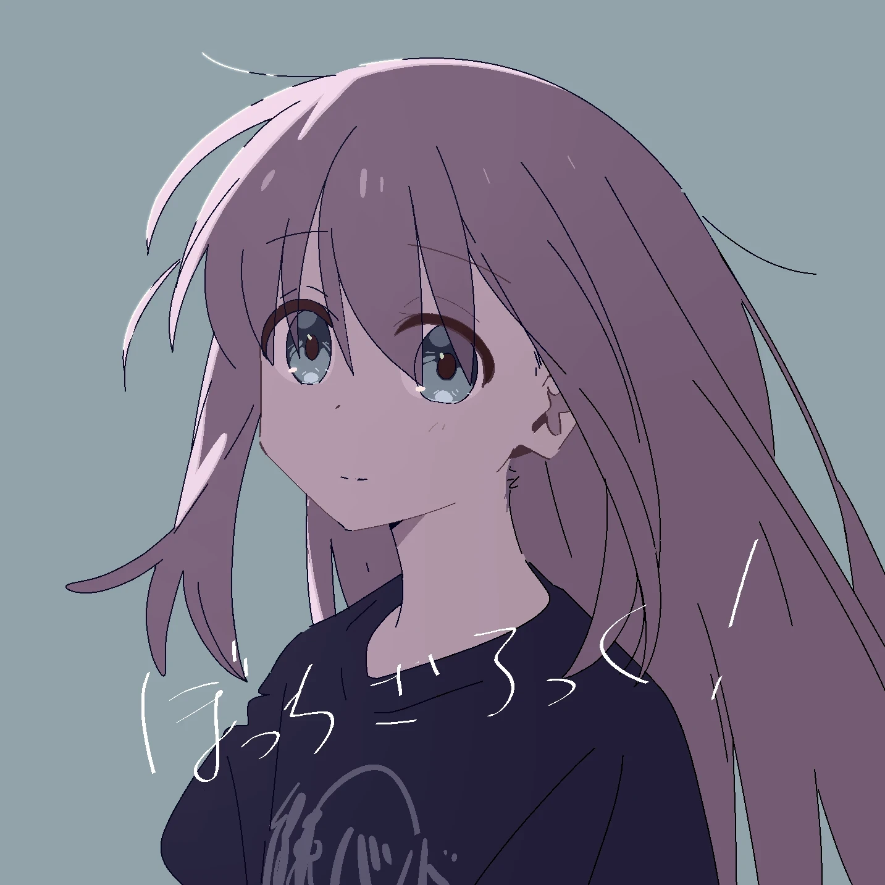
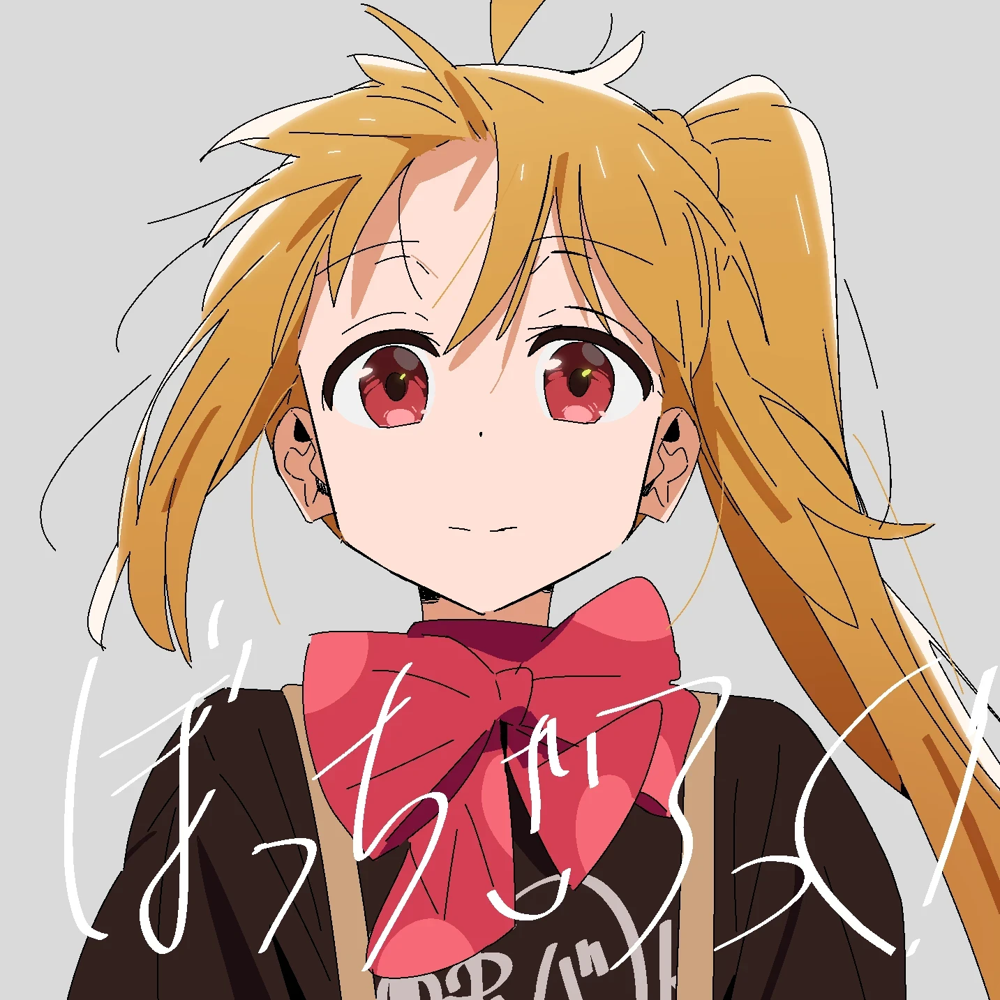
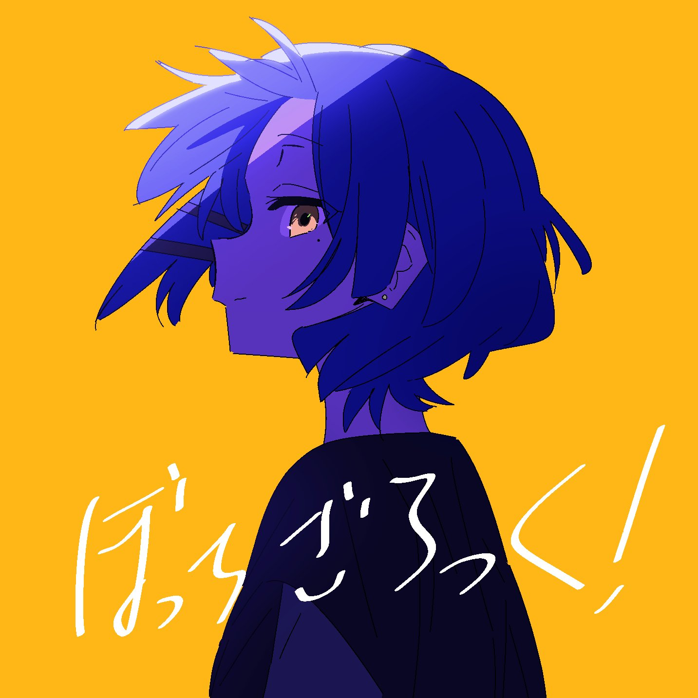

首页
我的生活
兴趣爱好
家乡山水
人生寄语
学习方法
人生寄语
人生如逆旅，我亦是行人。在人生路上，孤独是常态，我们无法确保自己会得到他人的关心，在孤立无援的时候，在迷茫黑暗的时候，我们更要坚持自己所爱，像波奇酱一样默默练习成长。

我们也要像伊地知虹夏一样，在追逐梦想的过程中，永葆激情，以一颗善良热情的心对待周围的人

在成长过程中，希望我们能像山田凉一样，保持自己的个性，你不必成为任何人，你就是你自己
